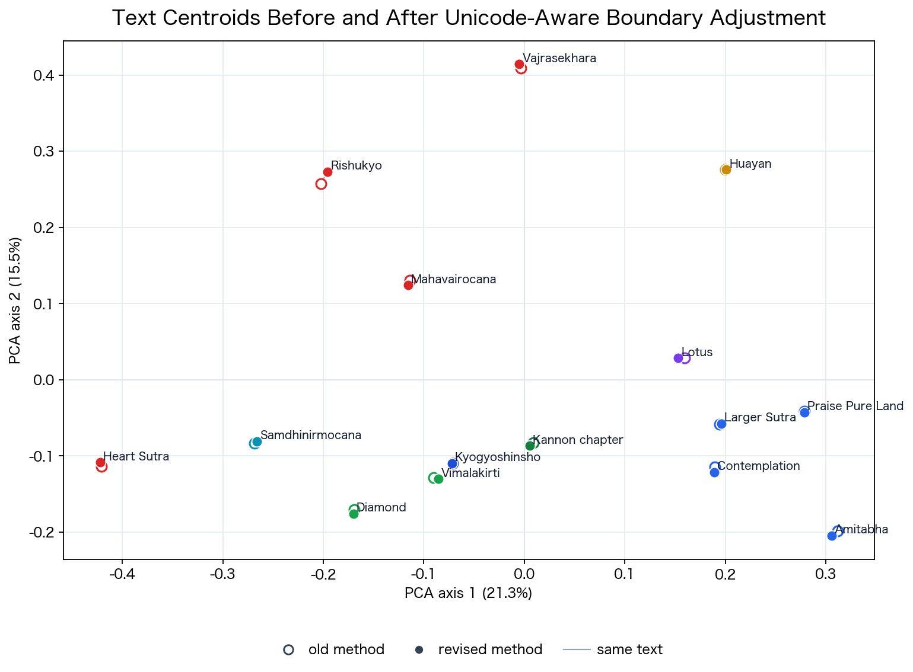

Errata and Supplement: adopting Unicode-aware chunking
This erratum does not replace the broad semantic map in the v1.0.0 release. In the old method, the token stream was split into fixed-length windows and each window was converted back to text on its own. Some chunk boundaries therefore cut through a character representation, producing the replacement character U+FFFD in the chunk text. Future work adopts a revised method that adjusts chunk boundaries so they fall on Unicode character boundaries.
Method
The comparison uses the sect-sutra corpus used in the paper: 15 texts and 433 chunks. Both methods keep the same 700-token windows and 100-token overlap. The old method takes a fixed-width slice of the token sequence and converts that slice directly back into text. The revised method first relates token positions to character positions in the original Python string, then rounds each chunk start and end to Unicode character boundaries. This prevents a chunk from containing only part of a character representation.
U+FFFD appears because tiktoken tokens are not Unicode characters themselves; they are units over UTF-8 byte sequences. A CJK character is represented by multiple bytes and can, in some cases, span multiple tokens. When a fixed-length token slice is decoded by itself, the start or end of the slice may contain an incomplete UTF-8 sequence, which is then emitted as the replacement character U+FFFD.
In this corpus, the 265 revised chunks that reach 700 tokens have a median length of 458 characters, with a p10-p90 range of 432-489 characters. The 700-token window therefore corresponds roughly to about 460 CJK text characters in these classical Chinese-based materials. Character counts are Python string characters and include punctuation and symbols.
The 100-token overlap means that text near a boundary is also partly present in adjacent chunks. Boundary-level differences are therefore more likely to be averaged out in text centroids and volume-level summaries, which is one plausible reason for the broad stability observed here. The overlap does not, however, eliminate all chunk-level first-place source changes.
Technical note: the implementation uses tiktoken offsets to map token positions to Python string positions. The old behavior was reproduced with the same fixed-token decoding used in v1.0.0.
String Quality
| method | chunks | chunks with replacement characters | replacement characters | median tokens | mean tokens |
|---|---|---|---|---|---|
| old method | 433 | 256 | 326 | 700 | 692.935 |
| revised method | 433 | 0 | 0 | 700 | 692.679 |
Quantitative Evaluation
The embedding model is text-embedding-3-large. The old-method embeddings use the existing embedding cache. Only the revised chunks were newly embedded with the same model. Public outputs do not include raw text or chunk text.
| comparison | count | min | p10 | median | mean | p90 | max |
|---|---|---|---|---|---|---|---|
| same-position chunks | 433 | 0.89001 | 0.966485 | 0.997813 | 0.98916 | 1 | 1 |
| text centroids | 15 | 0.995906 | 0.996709 | 0.998511 | 0.99809 | 0.998773 | 0.999538 |
| sect centroids | 11 | 0.997908 | 0.997908 | 0.998751 | 0.998713 | 0.999069 | 0.999086 |
At the text level, the old and revised centroids remain closely aligned. The lowest text-centroid cosine is 0.995906.
| text | ID | old/revised centroid cosine |
|---|---|---|
| 佛説阿彌陀經 | t0366_amida_sutra | 0.995906 |
| 大樂金剛不空眞實三麼耶經 | t0243_rishu_kyo | 0.996541 |
| 般若波羅蜜多心經 | t0251_heart_sutra | 0.996961 |
| 觀世音菩薩普門品 | t0262_kannon_chapter | 0.997215 |
| 妙法蓮華經 | t0262_lotus_sutra | 0.997908 |
| 稱讃淨土佛攝受經 | t0367_praise_pure_land | 0.998081 |
| 佛説觀無量壽佛經 | t0365_meditation_sutra | 0.998349 |
| 佛説無量壽經 | t0360_larger_sukhavati | 0.998511 |
| 金剛般若波羅蜜經 | t0235_diamond_sutra | 0.998672 |
| 大毘盧遮那成佛神變加持經 | t0848_maha_vairocana | 0.998693 |
| 大方廣佛華嚴經 | t0279_flower_garland | 0.998707 |
| 維摩詰所説經 | t0475_vimalakirti | 0.998728 |
| 解深密經 | t0676_samdhinirmocana | 0.998751 |
| 金剛頂一切如來眞實攝大乘現證大教王經 | t0865_vajrasekhara | 0.998787 |
| 顯淨土眞實教行證文類 | kyogyoshinsho | 0.999538 |
Three-Layer Check
The semantic layer here is an embedding-based source mixture: it uses cosine similarity between target chunks and source chunks. The source changes in this layer should therefore be read as changes in local source rankings derived from embeddings, not as a collapse of the embedding space as a whole.
The three-layer source-mixture map was also recomputed under the old and revised chunking methods. In the semantic source-mixture layer, the dominant source changes for 33 / 197 chunks. However, the dominant source by volume does not change. In the style/lexical layer, the dominant source changes for 1 / 197 chunks. In the source-marker layer, it changes for 0 / 197 chunks.
| layer | chunks | median weight cosine | mean L1 distance | dominant-source changes | volume-dominant changes |
|---|---|---|---|---|---|
| semantic source-mixture layer | 197 | 0.992013 | 0.123899 | 33 / 197 | 0 / 7 |
| style/lexical layer | 197 | 1 | 0.000657 | 1 / 197 | 0 / 7 |
| source-marker layer | 197 | 1 | 0 | 0 / 197 | 0 / 7 |
For the source-marker layer, the number of chunks with detected markers and the total number of marker hits are unchanged.
| metric | old method | revised method |
|---|---|---|
| chunks with markers | 99 | 99 |
| total marker hits | 170 | 170 |
| exact marker-vector match rate | 1 | |
| chunks with changed marker vector | 0 |

Interpretation
The U+FFFD issue in the old method is a real text-quality and reproducibility problem. At the same time, embedding cosine for chunks at the same position remains high: mean 0.98916 and median 0.997813. Text and sect centroids also remain closely aligned. The broad semantic map in v1.0.0 is therefore not immediately invalidated.
The semantic source-mixture layer nevertheless shows measurable sensitivity in chunk-level first-place source assignments. This suggests that local source rankings can change under input noise when candidate sources are close. At the same time, the 100-token overlap plausibly spreads boundary-level differences into adjacent chunks and helps stabilize text centroids and volume-level tendencies. By contrast, volume-level dominant sources, the style/lexical layer, and the source-marker layer remain stable. This is also a methodological advantage of the three-layer design: it separates where the analysis is sensitive from where it is stable.
Displaying chunk excerpts, SAT line-range correspondence, individual-neighbor inspection, and future citation-level analysis should not use the old method as the baseline. Future work should use the revised Unicode-aware method.